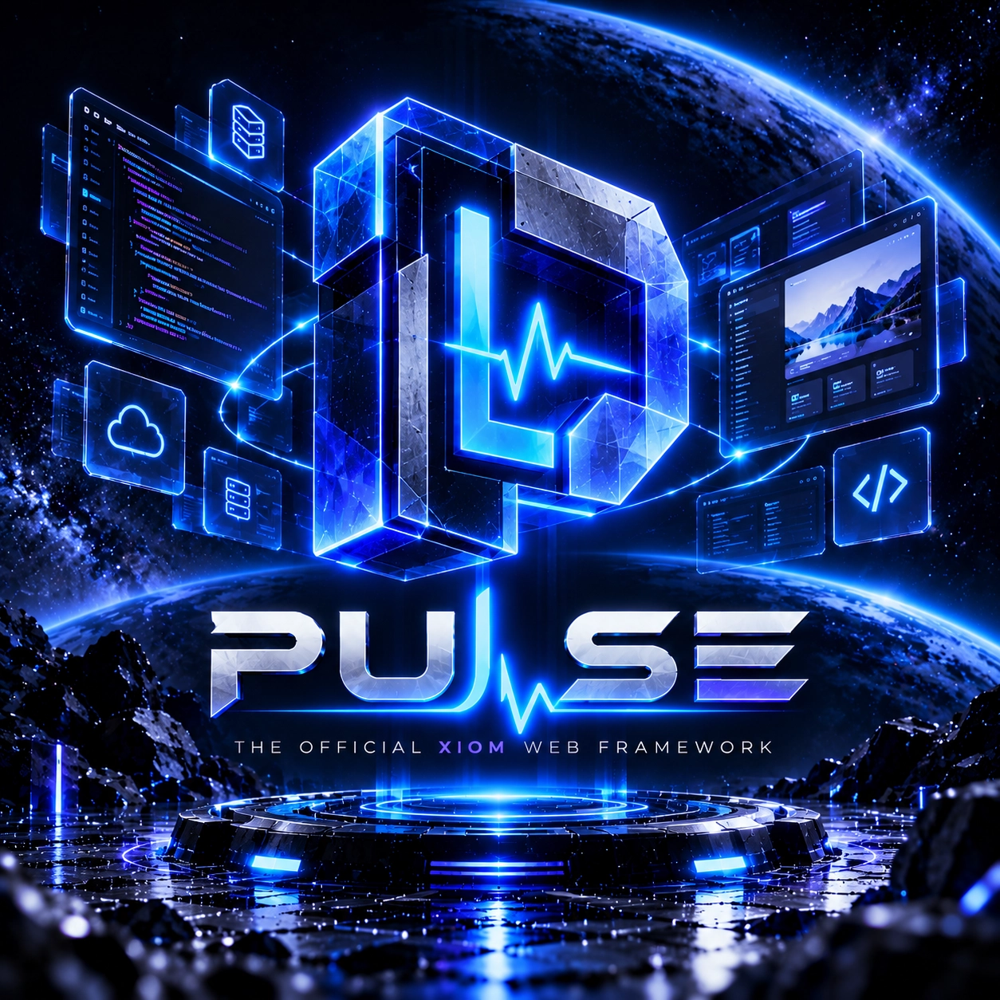
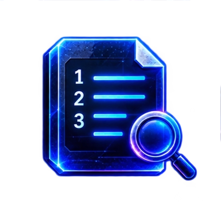

XIOM project -- beta
live demo
Pulse
The official XIOM web backend: a single-binary HTTP/1.1 service built with the XIOM toolchain and running behind the front proxy on loopback by design. Open source, MIT OR Apache-2.0. Pulse is a separate project from the language itself -- it lives on this subdomain for now and moves to its own home when it graduates.
Honest beta: the repository is public and pulse-v0.1.0 is the first release. Every number below is evidence-backed and reviewed by the Pulse lane; the gap list is just as real as the wins.
What works today
Verified on Windows and Linux: HTTP smoke 78/78, three suites on both platforms, crash/reopen 6/6.
Single binary
One process, no runtime dependencies; MIT OR Apache-2.0.
HTTP/1.1 requests
Parsing and request limits, exercised by the smoke suites on both platforms.
Sessions and JWT
JWT HS256 sessions, CSRF protection and opt-in CORS.
Smuggling guard
Chunked request decoding, a TE/CL smuggling guard, and schema validation on the auth routes.
Crash-safe store
Append store by default; optional embedded xiom.kv backend (45m soak green, hard-kill reopen intact).
Rate limiting
Verified on Windows and Linux.

Access log and audit trail
JSON access log and an audit trail for privileged actions.
Prometheus metrics
Prometheus text endpoint, restricted at the proxy.
TLS through nginx
11/11 end-to-end on Windows and Linux.
Docker image
Verified from deploy/Dockerfile.
Loopback by design
Binds on loopback behind the front proxy, by design.
Load soak
1h: 13,198/13,198 requests, 0 errors; 64 simultaneous connections served.
Honest beta -- what it does not do yet
- About 55% of the team's strict production bar: not production-ready, not hardened, not battle-tested.
- No keep-alive yet -- one request per connection (the front proxy mitigates).
- No receive timeouts yet; avoid exposing it directly (the front proxy mitigates).
- No graceful SIGTERM drain yet; restarts heal the store.
- No credentials or RBAC: the login is a demo, not a security boundary.
- No HTTP/2, SSE or WebSockets; TLS and proxying are the front proxy's job.
One-line install
The installer resolves the latest release, verifies its SHA256, installs it for your user (no administrator or root needed) and puts a pulse command on your PATH. Only platforms that passed the release suites are offered -- macOS is not published yet.
# Windows PowerShell
irm https://pulse.xiom-lang.org/install.ps1 | iex
# Linux
curl -fsSL https://pulse.xiom-lang.org/install.sh | shWhere it lands: %LOCALAPPDATA%\pulse on Windows (-NoPath skips the PATH edit; reopen the terminal afterwards) and ~/.local/share/pulse on Linux, with ~/.local/bin/pulse linked. It lands as both pulse and the original pulse_app name. Read install.ps1 or install.sh before piping if you prefer; afterwards pulse --version confirms the build. Configuration, the HTTP API and operations are covered in the documentation.
Try it live
This site is served by the running Pulse demo. The interactive page exercises the service's endpoints from the browser -- health, version, echo and the crash-safe event store, same origin, no keys.
Downloads
Downloads come from the release pipeline: releases on GitHub, mirrored at dl.xiom-lang.org/pulse (hourly). Buttons appear from the latest release itself -- nothing is hardcoded here.
What is next
- The repository is public and pulse-v0.1.0 is cut; the mirror catches up hourly, and the demo deployment follows.
- The demo then serves this page itself, with the live status/version badge behind the proxy.
- Chunked request decoding, configuration validation and the source-roots build proof have landed; the queue continues with chunked responses and a long soak of the optional kv backend.
Nothing here is a release or a stability promise; the beta label stays until the gap list above is cleared.